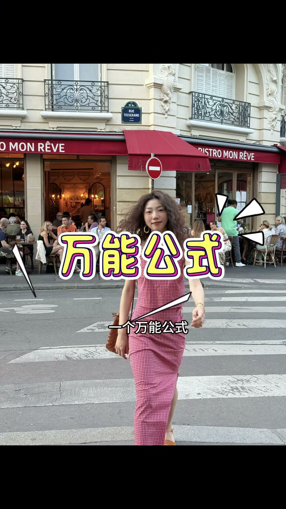
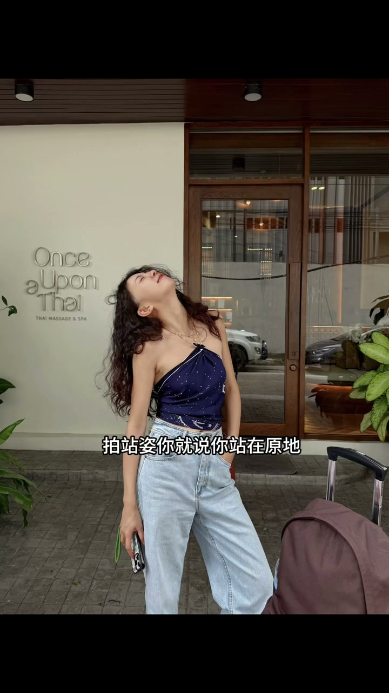
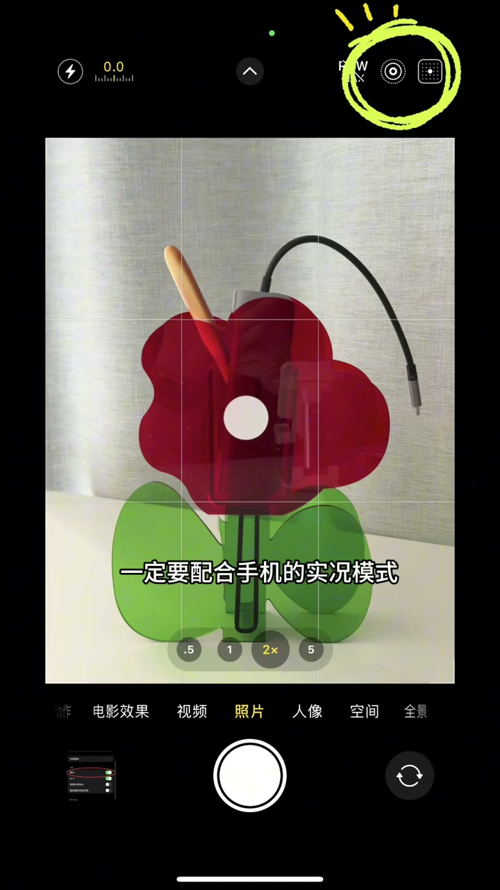

“自然点”“摆个姿势”：最不自然的指引
00:00你和搭子出门拍照，他给你说自然点——最不自然的指引就是这句。
00:04他说摆个姿势，你手更不知道怎么摆了。
[00:03] 错误指引：“自然点”最不自然
Wrong direction: “just be natural” is the least natural
[00:07] 错误指引：“摆个姿势”手更僵
Wrong direction: “strike a pose” makes the hands stiffer
动作链代替摆拍
00:06正确的应该是用动作链代替摆拍。
00:09姿势不是摆出来的，是动出来的——让一连串小动作带着你，快门抓住动作中的自然瞬间。

[00:14] 动作链：让动作带着身体走
Action chain: let the move carry the body

[00:22] 自然瞬间：动作过程中的抓拍
Natural moments: candid shots mid-motion
实况模式兜底，选最好的一帧
00:30饮料会、手机实况模式——先拍手（先把动作链拍下来）。
00:32后面再去编辑里面调整，选最好的一张做封面照。
00:37动作做多了怎么都会有一张可以的。

[00:31] 实况模式连拍，编辑里选最好一帧
Shoot in Live Photo mode, then pick the best frame in editing
生活感照片的核心是“动”不是“摆”——用动作链代替摆拍，再用实况模式兜底，总能挑出最自然的一张。